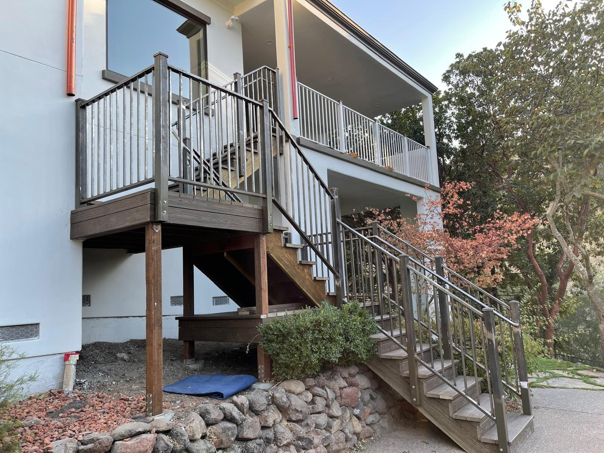

01
Mobile Welding
On-site welding for homes, commercial properties, contractors, trailers, shops, yards, and field repairs.
- Job-site repair welding
- Steel and metal assemblies
- Bay Area mobile service

Services
Production Welding is built for practical service calls and shop work: get the welding setup where it fits best, make the repair correctly, and leave the project stronger than it was.
On-site welding for homes, commercial properties, contractors, trailers, shops, yards, and field repairs.
Shop-based welding and fabrication for parts, brackets, gates, rails, repairs, and metal assemblies that are better handled off site.
Welding support for gate frames, hinges, handrails, stair rails, posts, brackets, and access points.
Practical weld repairs for trailers, utility equipment, metal brackets, cracked components, and broken assemblies.
Small fabrication, field fitting, custom brackets, reinforcement plates, and metal details built around the project.
Welding support for contractors and property owners who need on-site fit-up, reinforcement, repair, or metal details completed cleanly.
When a broken gate, trailer, bracket, rail, or piece of equipment is holding up the day, call with photos and location details.
How It Works
Send photos, measurements, project location, access notes, and the timeline. Production Welding will review the project and recommend mobile service or shop work when the scope is a good fit.
Get a Welding Estimate
Call Production Welding or send the project details, location, photos, and timing. Mobile service and shop work are available across the Bay Area.